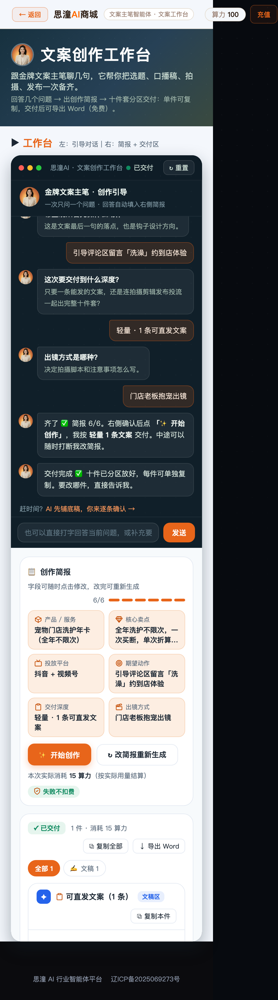
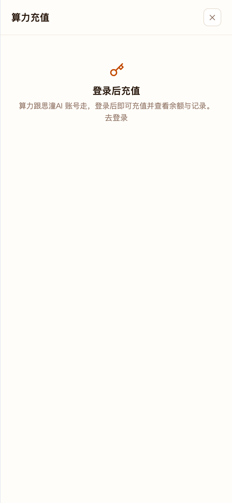
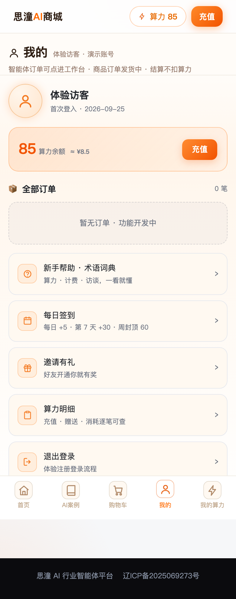

真人走查思潼AI商城 · 用户体验报告
身份设定：一个开社区火锅店的小老板，第一次听说这个平台，想给店里做条抖音文案
一、一句话结论
东西是好东西，但我差点在最后一步之前就走了。
交付物质量确实超出预期——花 15 算力拿到的是一份能直接开拍的 60 秒口播分镜脚本。但通往这一步的路上，
有三个地方会让人以为"这平台是坏的"：找不到登录入口、购物车点了没反应、以及最要命的——
作为一个没登录的访客，我认认真真回答了 6 个问题，点下「开始创作」，等了 60 秒，只等来一句"登录已过期"。
二、先说好的：这几处是真的好用
1. 交付物不是"AI 味套话"，是能直接开拍的东西
我拿到的是一份 60 秒口播脚本，按时间轴切成 6 段，每段都有：动作情绪提示、口播原话、B-roll 画面建议，结尾还带 6 个话题标签。摘录一段：
「咱家洗护年卡，全年不限次，一次买断，单次折算省一半。洗得越勤，越划算。」
这不是"赋能、闭环、抓手"那套空话，是拿去就能拍的。单这一条，15 算力（≈¥1.5）我觉得值。
2. 引导式问需求，比给我一个空输入框友好太多
工作台一次只问一个问题，下面配 3 个推荐选项可点，右侧「创作简报」实时回填。还贴心地留了条捷径：
对比"请描述你的需求"那种空框，这个设计明显更懂不会写提示词的小商家。
3. 钱的事说得清清楚楚
- 价格双标注：算力 + 约等于多少人民币（
15 算力 / 次 ≈ ¥1.5） - "失败不扣费"在详情页、工作台、按钮下方反复出现——这对第一次掏钱的人很重要
- 实际扣费与标价一致：我这次标 15，扣的就是 15（100 → 85），生成后明确写「本次实际消耗 15 算力」
- 生成速度可接受：约 20 秒内出稿，全程无 JS 报错
4. 两个让人愿意信任的细节
- AI 案例页明确标了"演示数据虚构"——不拿假案例充真，诚实，加分
- 搜索真的能用：搜「直播」立刻出 2 个精准结果（罗盘 / 许复），还带「清空」按钮

三、但有三个地方，我以为平台坏了
P0 ① 找不到登录入口，而报错偏偏让我去点它
真实发生的事
我在工作台填完 6 个问题，点「开始创作」，60 秒后收到这句话：
两个问题叠在一起：
第一，我从来没登录过，说"已过期"是错的，应该是"请先登录"。
第二，它让我点右上角那个按钮——我把首页从头翻到尾，顶栏只有「思潼AI商城｜算力 —｜充值」，根本没有登录入口。
最后我是靠"点充值 → 弹层里有个「去登录」"才摸进去的。这个入口藏得太深了，普通用户到这一步基本就关页面了。

P0 ② 未登录用户可以一路走到最后一步才被拦
我可以看详情页、可以进工作台、可以填完 6 项简报、可以点「开始创作」——直到最后一步才告诉我没登录。这时候我已经投入了 6 轮对话、约 2 分钟。
把门槛放在最后一步，等于让用户先付出全部成本再拒绝他。更合理的做法是：要么进工作台时就提示"登录后可保存并生成"，要么在填简报前就拦，别让人白填。
另外一点：未登录时按钮下方写的是「预计消耗约 （空白）（按本次实际用量结算）」——价格数字整个没了。登录后才显示"约 15 算力"。空白价格比没有更让人不安。
P1 ③ 购物车是个死 Tab
底部 5 个 Tab：首页 / AI案例 / 购物车 / 我的 / 我的算力。我点了「购物车」，页面纹丝不动，还在首页，没有任何内容也没有任何提示。点了三次都一样。
一个不工作的 Tab 放在主导航里，用户会认为整个平台都不稳定。

四、付费之后才发现的坑
P1 花了钱，订单页是 0 笔
我消费了 15 算力、拿到了交付物，然后去「我的 → 全部订单」：
付费用户最需要的一件事就是"我买的东西在哪"，这里直接是空的。交付物目前只能靠工作台里那一屏，一旦清缓存或换设备就找不回来了（虽然页面宣传说"交付物云端保存可回看"）。

P1 我登录了，但页面还叫我"体验访客"
我用"测试火锅店"这个名字登录后，算力确实到账了（100），但「我的」页顶部仍然写着：
首次登入日期还是 9 月 25 号，不是今天。我到底登录成功了没有？这个页面给不出答案。花真钱的人看到"体验访客"四个字，心里是没底的。
P1 进度说 6/6，其实还差一项
填简报时我遇到一个困惑：进度显示 6/6，但右侧还有一项写着「出镜方式 · 待填」，「开始创作」按钮是灰的。点它没有任何提示——不会告诉我"还差出镜方式没填"，就只是没反应。
我栽在这里两次，第二次才反应过来要再答一轮。真实用户大概率在这里放弃。
五、一些细节问题（不致命，但影响信任感）
| 程度 | 现象 | 我当时怎么想 |
|---|---|---|
| P2 | 模板文案有空洞：「一个账号， 用遍所有数字员工」 | 像是没做完就上线了，读起来断句很怪 |
| P2 | 餐饮场景下出现宠物示例：「评论区留言「洗澡」约体验」 | 我选的是餐饮门店，推荐选项却是宠物洗护——示例写死了，不跟着我的选择变 |
| P2 | 本地环境里显示生产域名 ai.lcppch.top/agent/... | 我在 127.0.0.1 上看到线上地址，不知道点进去会跳哪 |
| P2 | 口径打架：详情页写「已上线 · 可直接对话」，首页还留着「🔔 预约上线提醒」 | 到底上线了没有？ |
| P2 | 登录只填一个企业名就拿到 100 算力 | 演示环境可以理解，但页面上没说明这是"体验账号"，容易被误认为正式注册 |
| P2 | 余额显示不一致：顶栏「算力 —」，我的页「≈ ¥0」 | 一个显示横线一个显示 0，哪个准？ |
六、如果我是老板，我最想先修哪三个
七、附：我这趟的完整数据
| 指标 | 实测 |
|---|---|
| 首屏加载 | 2.2 秒（本地，手机视口） |
| JS 异常 / 控制台错误 | 全程 0 条（走完 6 个页面 + 一次完整生成） |
| 引导问答轮次 | 填满 6 项简报实际需要 7 轮（进度数字比实际填充快一拍） |
| 生成耗时 | 约 20 秒内返回完整交付物 |
| 扣费准确性 | 标价 15 算力 → 实扣 15 算力（100 → 85）一致 |
| 交付物 | 60 秒口播脚本，6 段时间轴 + B-roll + 6 个话题标签；支持复制全部 / 导出 Word（免费） |
| 失败提示 | 未登录时阻塞，但文案错误（说"已过期"）、指引的按钮不存在 |
| 能走通的入口 | 首页 / 详情页 / 工作台 / AI案例 / 我的 / 搜索 / 签到弹层 / 充值弹层 |
| 走不通的入口 | 购物车 Tab（点击无响应）／订单页（0 笔） |